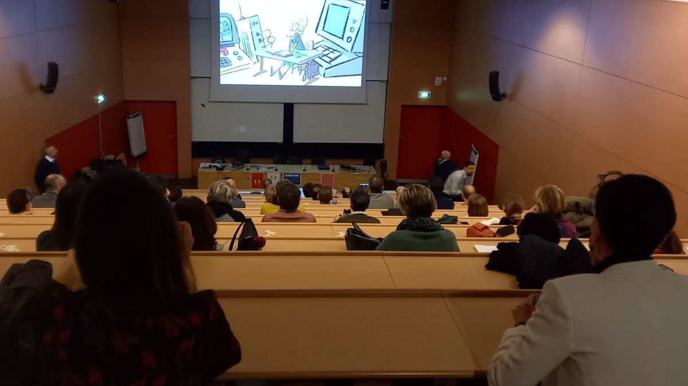

 فیلم اِدا و زِنگمَن — انگلیسی فیلم انگلیسی نسخهٔ انگلیسی فیلم اِدا و زِنگمَن. برای سایر زبانها به صفحهٔ اصلی فیلم بروید. فارسی (بهزودی) انگلیسی آلمانی فرانسوی پخش نسخهٔ انگلیسی Ada & Zangemann — A Tale of Software, Skateboards, and Raspberry Ice Cream · FSFE-Tube